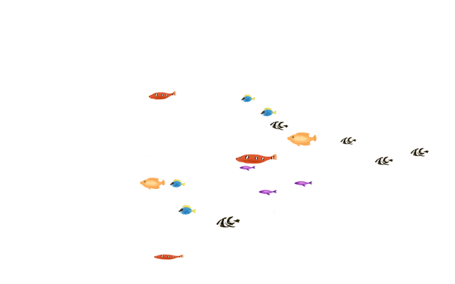
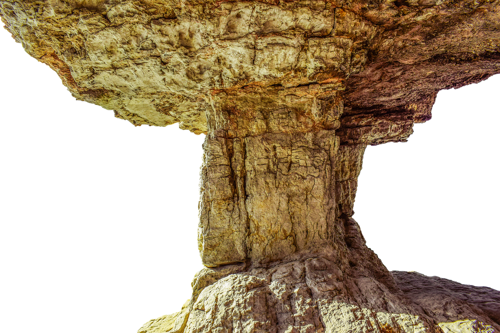
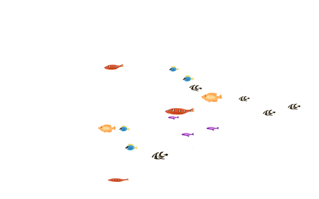
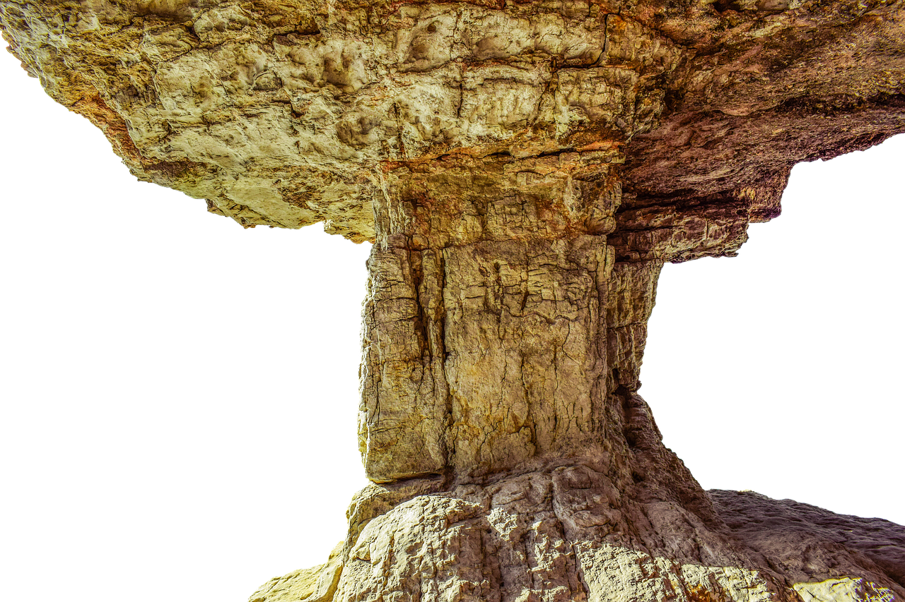

¿A quien está dirigido?
A toda empresa de pequeña y mediana categoría de producción psicola, aficionados, psiculturores, o personas que no cuenten con conocimiento de la psiculturora, surviving fish se encarga de que la interacción humano pez, sea la más mínima
posible, para que te puedas encargar de otra labores no tan ligadas al cuido del pez.
¿Cómo lo hacemos?
Monitoreando constantemente las variables de calidad del agua y del medio ambiente del invernadero, aseguramos de que no pase por alto ningún factor importante para que su producto alcance los más grandes estandares de calidad. podrás
consultar de manera fácil e intuitiva en la página web, dónde recibirá también algunos consejos, por eso somos la mejor opción en el mercado Surviving fish no está centrada en una sola especie psicola, sino también en toda especie
de pez de agua dulce que no supere una longitud de 45cm .
 


